@schuanglawyer:企鵝阿爸「神秘小物」即將登場💖㊙️
Accounts
| 平台 | 帳號 | 已收錄貼文 | 最後更新 |
|---|---|---|---|
| https://www.facebook.com/SCHuangLawyer/ | 94 | 2026-08-28 17:06 | |
| https://www.instagram.com/schuanglawyer/ | 118 | 2026-08-28 22:26 | |
| Threads | https://www.threads.com/@schuanglawyer | 161 | 2026-08-30 10:06 |
Timeline
顯示 377 / 377 則
@schuanglawyer:企鵝阿爸「神秘小物」即將登場💖㊙️
@schuanglawyer:明天晚上19:30，動起來！桃園夜市✨ 桃園夜市是不少在地人晚餐、消夜覓食的熱門去處，從中正路一路延伸，各式小吃香氣一路飄散，從經典鹹食、甜點飲品到人氣銅板美食，每走幾步就有不同選擇😋 明晚19:30，世杰來到桃園夜市，感受桃園夜晚的熱鬧活力！心桃園，動起來💖
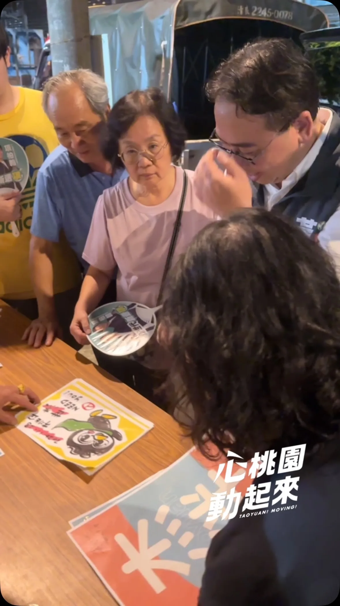
晚上來到柏翰的說明會，感謝杰伴跟小企鵝們，特別準備應援物！
明天晚上19:00，動起來！八德興仁花園夜市✨ 興仁花園夜市是在地人氣夜市，美食選擇超豐富，從鹹酥雞、牛排、滷味到各式甜點小吃，還有不少遊戲攤位，越晚越熱鬧🔥 明晚世杰來到興仁花園夜市，和大家一起逛夜市、吃美食、感受八德夜晚的熱鬧活力！心八德，動起來💖
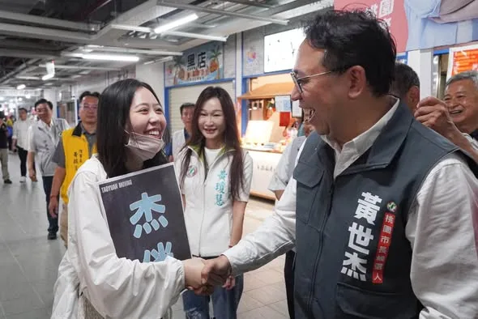
「杰伴」真的來同行💪🏻一早到桃園人熟悉的新永和市場，感謝熱情的年輕朋友，印出網友幫我設計的應援手板，親自來幫我加油！ 今天也是豐收的一天！感謝沿途的攤商跟鄉親，送給我蘿蔔、蒜苗、竹筍、花生，祝福「好彩頭、凍蒜、節節高升、好事發生」。有支持者特地加入志工行列，陪我一起掃市場。鄰近咖啡店的老闆，也特別準備手工烘焙咖啡和我們分享，能量瞬間充滿❤️🔥 永和市場一路承載桃園人的採買日常，因捷運工程遷建後，當時市府花了許多時間與攤商協調溝通，現在市場冷氣完備、乾溼分離、停車空間更充裕、環境更加明亮舒適。這樣的規劃值得肯定，證明只要從使用者需求出發，市場可以兼顧傳統生活與新的城市機能。 但大家最關心的，依然是捷運綠線究竟何時能真正通車？面對工程延宕，市府有責任給出確切時程。近期在各區接連拋出大巨蛋、區公所改建等大型規劃，但建設不能遇到選舉急救章畫大餅，更不能缺乏在地居民參與，讓建設真正回應地方需求。 感謝競總主委范振修資政、黃家齊議員、黃瓊慧 桃園觀察日記議員、李光達議員（桃園區）議員、桃園媽媽-李柏瑟議員候選人、新永和市場自治會許輝仁會長、李麗凰榮譽會長、北桃園競總黃宗源總幹事一起同行。 我會和桃園隊一起站在第一線，桃園要進步，就要貼近地方的真正聲音！一起讓心桃園，動起來💖
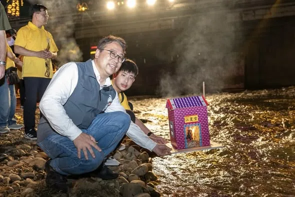
今晚的南崁溪畔水燈點點，映照著整座城市百年來的虔誠與慈悲。 世杰傍晚來到景福宮參拜祈福，沿路向市民朋友致意。遶境的尾聲，我也來到溪畔，跟大家一起把水燈放入溪流，祈願四方平安、風調雨順。 景福宮和福德宮的中元慶典，傳承超過一世紀，水燈排遶境與放水燈，早已超越慰藉孤魂、慈悲普渡的傳統意涵，而是代代相傳，凝聚桃園十五街庄跟各大姓氏宗親的情感記憶。 現在的桃園，是擁有235萬人的大城，人口規模即將超越首都台北。在城市大步向前、推動各項建設的同時，世杰會更用心守護在地文化底蘊，顧好我們的根，讓桃園成為一座進步、繁榮又有歷史溫度的宜居之城。
來到桃園大廟，參加慶讚中元水燈排車遶境！ 等等有市民朋友會去放水燈嗎？
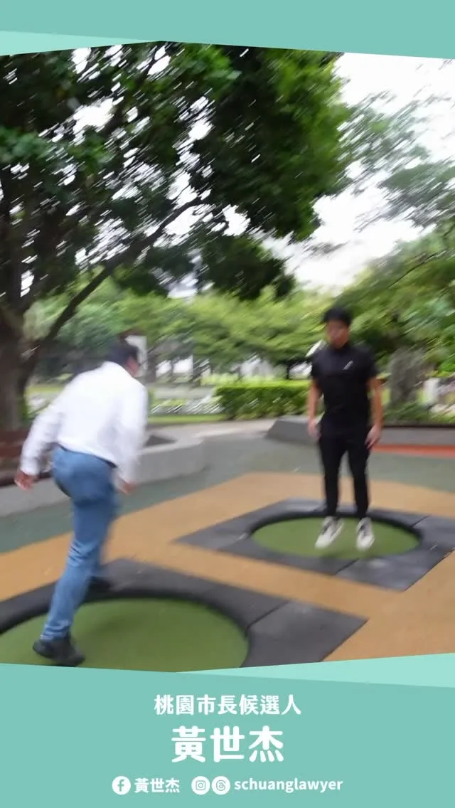
@schuanglawyer:來到公園，親自挑戰看看🤣從孩子的角度出發，更能了解孩子需要什麼！ 身為爸爸，我時常陪著孩子到公園玩。我已簽下「兒童遊戲空間政策承諾書」，未來要讓桃園的公園更好玩，也更適合孩子活動、探索與成長。 ✅打造青少年戶外遊憩空間：正視12歲以上青少年的需求，規劃適合的活動空間！ ✅打造10分鐘遊戲圈：讓每個生活圈，都有孩子可以自在玩耍的遊戲空間！ ✅打造涼感公園：增加遮蔭、降溫與戲水設施，夏天也能舒服玩！ 努力把桃園打造成真正的遊戲宜居城市！心桃園，玩起來💖

@schuanglawyer:一早來到內壢市場！很多鄉親特地來等待，世杰跟團隊從市場一路走進街區，收到好多鼓勵跟打氣💪🏻我要特別感謝內壢福海宮劉守榮主委，昨晚不幸遇到車禍，今天依然堅持到場相挺，真的很感動，祝福主委早日康復。 大內壢居民超過十萬，人口持續成長。今天有不少市民跟攤商跟我反映，新華街路面多年沒有重新刨鋪，內壢國小通學廊道完成後，這一帶停車空間缺乏的問題，依然沒有一併改善。大家期待逛市場的感受更好，期待整體生活環境可以同步升級！ 這些看似日常的小事，其實都是居民每天生活最直接的感受。 未來鐵路地下化，沿線將會釋出更多公共空間。世杰上任後，會全面盤點居民需求，規劃地方期待已久的公有市場，改善公有空間雍塞跟不足的問題。同時也要積極協助鐵路地下化，讓工程如期如質完成。 感謝謝內壢市場的熱情，大家送上柿子、粽子、白蘿蔔，祝福世杰「事事如意、好事接粽來、好彩頭」，滿滿心意我都收到了！ 人口在成長，建設不能慢下來。我一定會全力以赴，讓內壢生活更便利、發展更順暢！心內壢，動起來💖
中壢最認真，就是黃崇真 @cchuang_0223 ！ 中壢正在面臨交通轉型期，除了鐵路地下化，還有中壢車站跟捷運銜接的重大工程，也同步進行中。崇真議員在議會持續監督，積極對市府提出各項建議，盼望能夠減少交通黑暗期對市民造成的困擾，加速建設的進度。 對市民來說，大型建設很重要，但每天生活遇到的小事，同樣關鍵。包括大家每天經過的路口安不安全、人行道好不好走。他把大家的需求放在心上，會勘、協調一件件解決，三年半以來服務超過6千件，真的非常拚。 崇真的溫暖，不只對有選票的大人。當他發現青少年自傷率愈來愈高，未成年孩子的心理健康出現危機時，也全力積極強化心輔資源，守護下一代。 這些年來，南桃園人口持續成長，醫療需求相當迫切，但在張善政任內大型醫院計畫停滯，遲遲沒有進展。未來世杰當市長，一定會盡快補上這個洞，我主張優先發展癌症、急重症、兒童等特色醫療。長期目標就是要為桃園爭取第二座醫學中心，讓醫療量能跟上城市發展的腳步。 感謝到場的市民朋友不畏風雨，把活動中心坐滿。謝謝我的競總主委范振修資政、南區競總黃仁杼總幹事、張火爐主委、黃傅淑香主委、舊明里羅善婷里長、興南里葉青旺里長、中建里李應偉里長、中央里楊萬焙里長、普義里黃崇修里長、永福里黃寶貞里長、中壢慈惠堂陳燦宏榮譽董事長，都現身給我們支持。 大事盯緊、小事做好，是崇真跟世杰共同的堅持。11/28，需要大家給我們更多支持，讓最打拚的議員跟市長聯手為地方做更多！讓心中壢 動起來💖
@schuanglawyer:週六的夜市，遇到6歲的「杰伴小企鵝」🐧💖 今晚來到八德興仁花園夜市，週末夜晚人潮滿滿、美食香氣一路飄散，越晚越熱鬧！最驚喜的是遇到目前年紀最小的杰伴，6歲妹妹特別拿著Q版的我和企鵝插圖來找我簽名，真的太可愛了！ 興仁花園夜市除了有各式各樣的美食，也有不少遊戲攤位，是很多爸媽週末帶孩子來逛逛、放電的好去處💯 繼續一步一腳印，把大家的聲音放在心上！心八德，動起來💖明晚桃園夜市見！
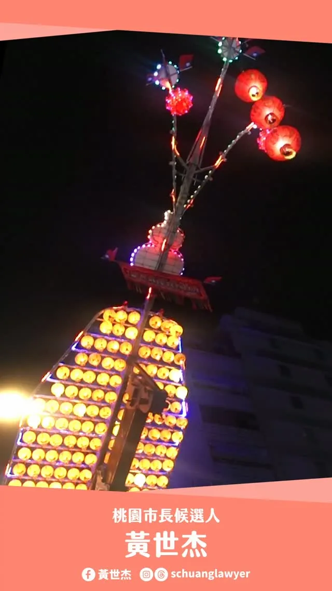
@schuanglawyer:傳承百年的景福宮中元祭典，是桃園特色文化，凝聚了一代代桃園人的共同記憶。 世杰會和大家一起努力，不只要讓心桃園動起來，更要守護在地文化，讓桃園在進步繁榮的同時，也有令人眷戀的溫度💖
@schuanglawyer:明天晚上19:00，動起來！八德興仁花園夜市✨ 興仁花園夜市是在地人氣夜市，美食選擇超豐富，從鹹酥雞、牛排、滷味到各式甜點小吃，還有不少遊戲攤位，越晚越熱鬧🔥 明晚世杰來到興仁花園夜市，和大家一起逛夜市、吃美食、感受八德夜晚的熱鬧活力！心八德，動起來💖
@schuanglawyer:「杰伴」真的來同行💪🏻一早到桃園人熟悉的新永和市場，感謝熱情的年輕朋友，印出網友幫我設計的應援手板，親自來幫我加油！ 今天也是豐收的一天！感謝沿途的攤商跟鄉親，送給我蘿蔔、蒜苗、竹筍、花生，祝福「好彩頭、凍蒜、節節高升、好事發生」。有支持者特地加入志工行列，陪我一起掃市場。鄰近咖啡店的老闆，也特別準備手工烘焙咖啡和我們分享，能量瞬間充滿❤️🔥 永和市場一路承載桃園人的採買日常，因捷運工程遷建後，當時市府花了許多時間與攤商協調溝通，現在市場冷氣完備、乾溼分離、停車空間更充裕、環境更加明亮舒適。這樣的規劃值得肯定，證明只要從使用者需求出發，市場可以兼顧傳統生活與新的城市機能。 但大家最關心的，依然是捷運綠線究竟何時能真正通車？面對工程延宕，市府有責任給出確切時程。近期在各區接連拋出大巨蛋、區公所改建等大型規劃，但建設不能遇到選舉急救章畫大餅，更不能缺乏在地居民參與，讓建設真正回應地方需求。 我會和桃園隊一起站在第一線，桃園要進步，就要貼近地方的真正聲音！一起讓心桃園，動起來💖
@schuanglawyer:今晚的南崁溪畔水燈點點，映照著整座城市百年來的虔誠與慈悲。 世杰傍晚來到景福宮參拜祈福，沿路向市民朋友致意。遶境的尾聲，我也來到溪畔，跟大家一起把水燈放入溪流，祈願四方平安、風調雨順。 景福宮和福德宮的中元慶典，傳承超過一世紀，水燈排遶境與放水燈，早已超越慰藉孤魂、慈悲普渡的傳統意涵，而是代代相傳，凝聚桃園十五街庄跟各大姓氏宗親的情感記憶。 現在的桃園，是擁有235萬人的大城，人口規模即將超越首都台北。在城市大步向前、推動各項建設的同時，世杰會更用心守護在地文化底蘊，顧好我們的根，讓桃園成為一座進步、繁榮又有歷史溫度的宜居之城。
@schuanglawyer:來到桃園大廟，參加慶讚中元水燈排車遶境！ 等等有市民朋友會去放水燈嗎？

@schuanglawyer:明天早上9:00，新永和市場動起來✨ 新永和市場從舊永和市場一路延續桃園人的採買日常，如今有室內空調、乾濕分離、共食區和停車空間，生鮮蔬果、肉品、水產到熟食一次都能買齊，獲得經濟部「四星優良市集」肯定🌟 明早9:00一起到新永和市場杰伴同行！心桃園，動起來💖
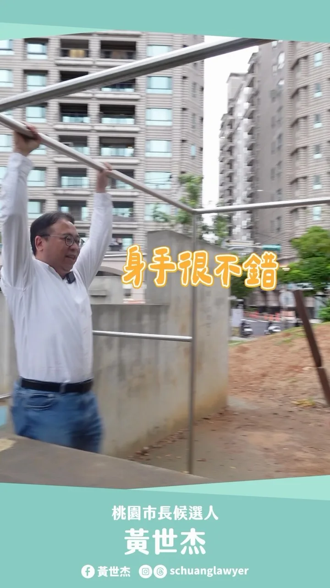
來到公園，親自挑戰看看🤣從孩子的角度出發，更能了解孩子需要什麼！ 身為爸爸，我時常陪著孩子到公園玩。我已簽下「兒童遊戲空間政策承諾書」，未來要讓桃園的公園更好玩，也更適合孩子活動、探索與成長。 ✅打造青少年戶外遊憩空間：正視12歲以上青少年的需求，規劃適合的活動空間！ ✅打造10分鐘遊戲圈：讓每個生活圈，都有孩子可以自在玩耍的遊戲空間！ ✅打造涼感公園：增加遮蔭、降溫與戲水設施，夏天也能舒服玩！ 努力把桃園打造成真正的遊戲宜居城市！心桃園，玩起來💖

一早來到內壢市場！很多鄉親特地來等待，世杰跟團隊從市場一路走進街區，收到好多鼓勵跟打氣💪🏻我要特別感謝內壢福海宮劉守榮主委，昨晚不幸遇到車禍，今天依然堅持到場相挺，真的很感動，祝福主委早日康復。 大內壢居民超過十萬，人口持續成長。今天有不少市民跟攤商跟我反映，新華街路面多年沒有重新刨鋪，內壢國小通學廊道完成後，這一帶停車空間缺乏的問題，依然沒有一併改善。大家期待逛市場的感受更好，期待整體生活環境可以同步升級！ 這些看似日常的小事，其實都是居民每天生活最直接的感受。 未來鐵路地下化，沿線將會釋出更多公共空間。世杰上任後，會全面盤點居民需求，規劃地方期待已久的公有市場，改善公有空間雍塞跟不足的問題。同時也要積極協助鐵路地下化，讓工程如期如質完成。 感謝競總主委范振修資政、張曉昀議員 @vina.lovezhongli 、黃崇真議員 @cchuang_0223 、彭俊豪議員 @c_peng 、魏筠議員 @weiyunin ，以及內壢福海宮劉守榮主委、黃國棟委員、林琦彬委員同行。 感謝謝內壢市場的熱情，大家送上柿子、粽子、白蘿蔔，祝福世杰「事事如意、好事接粽來、好彩頭」，滿滿心意我都收到了！ 人口在成長，建設不能慢下來。我一定會全力以赴，讓內壢生活更便利、發展更順暢！心內壢，動起來💖
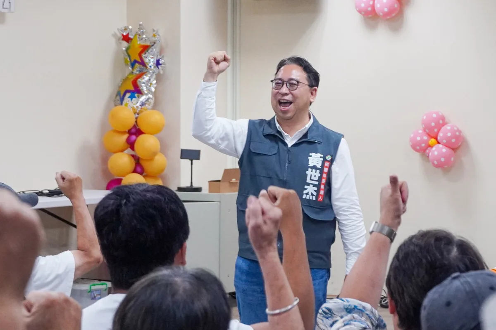
@schuanglawyer:中壢最認真，就是黃崇真 @cchuang_0223 ！ 中壢正在面臨交通轉型期，除了鐵路地下化，還有中壢車站跟捷運銜接的重大工程，也同步進行中。崇真議員在議會持續監督，積極對市府提出各項建議，盼望能減少交通黑暗期對市民造成的困擾，加速建設的進度。 對市民來說，大型建設很重要，但每天生活遇到的小事，同樣關鍵。包括大家每天經過的路口安不安全、人行道好不好走。他把大家的需求放在心上，會勘、協調一件件解決，三年半以來服務超過6千件，真的非常拚。 崇真的溫暖，不只對有選票的大人。當他發現青少年自傷率愈來愈高，未成年孩子的心理健康出現危機時，也全力積極強化心輔資源，守護下一代。 這些年來，南桃園人口持續成長，醫療需求相當迫切，但在張善政任內大型醫院計畫停滯，遲遲沒有進展。未來世杰當市長，一定會盡快補上，我主張優先發展癌症、急重症、兒童等特色醫療。長期目標就是要為桃園爭取第二座醫學中心，讓醫療量能跟上城市發展的腳步。 感謝到場的市民朋友不畏風雨，把活動中心坐滿。大事盯緊、小事做好，是崇真跟世杰共同的堅持。11/28，需要大家給我們更多支持，讓最打拚的議員跟市長聯手做更多！讓心中壢 動起來💖
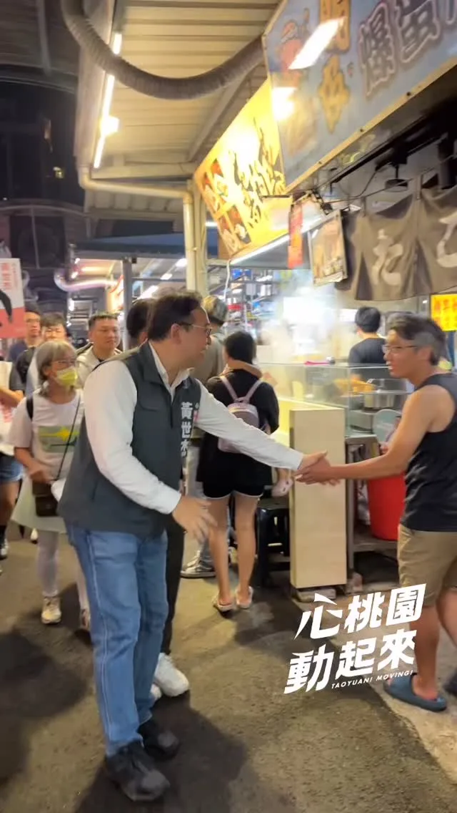
@schuanglawyer:現此時的八德興仁花園夜市💖
@schuanglawyer:晚上來到柏翰的說明會，感謝杰伴跟小企鵝們，特別準備應援物！
明天晚上19:00，動起來！八德興仁花園夜市✨ 興仁花園夜市是在地人氣夜市，美食選擇超豐富，從鹹酥雞、牛排、滷味到各式甜點小吃，還有不少遊戲攤位，越晚越熱鬧🔥 明晚世杰來到興仁花園夜市，和大家一起逛夜市、吃美食、感受八德夜晚的熱鬧活力！心八德，動起來💖
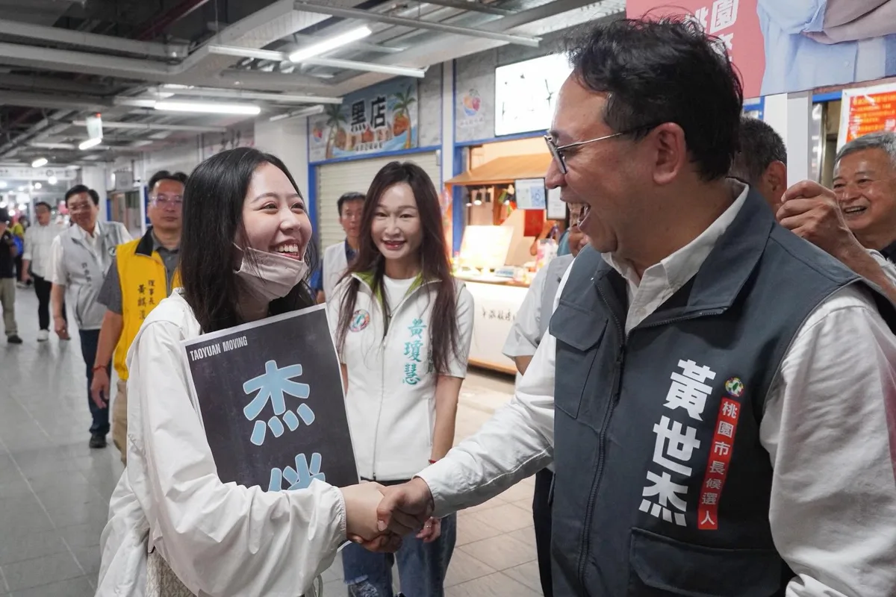
「杰伴」真的來同行💪🏻一早到桃園人熟悉的新永和市場，感謝熱情的年輕朋友，印出網友幫我設計的應援手板，親自來幫我加油！ 今天也是豐收的一天！感謝沿途的攤商跟鄉親，送給我蘿蔔、蒜苗、竹筍、花生，祝福「好彩頭、凍蒜、節節高升、好事發生」。有支持者特地加入志工行列，陪我一起掃市場。鄰近咖啡店的老闆，也特別準備手工烘焙咖啡和我們分享，能量瞬間充滿❤️🔥 永和市場一路承載桃園人的採買日常，因捷運工程遷建後，當時市府花了許多時間與攤商協調溝通，現在市場冷氣完備、乾溼分離、停車空間更充裕、環境更加明亮舒適。這樣的規劃值得肯定，證明只要從使用者需求出發，市場可以兼顧傳統生活與新的城市機能。 但大家最關心的，依然是捷運綠線究竟何時能真正通車？面對工程延宕，市府有責任給出確切時程。近期在各區接連拋出大巨蛋、區公所改建等大型規劃，但建設不能遇到選舉急救章畫大餅，更不能缺乏在地居民參與，讓建設真正回應地方需求。 感謝競總主委范振修資政、黃家齊議員 @jack790218 、黃瓊慧議員 @qn_taiwan 、李光達議員 @lee_kung_da 、李柏瑟議員候選人 @leeposhe_taoyuanmama 、新永和市場自治會許輝仁會長、李麗凰榮譽會長、北桃園競總黃宗源總幹事一起同行。 我會和桃園隊一起站在第一線，桃園要進步，就要貼近地方的真正聲音！一起讓心桃園，動起來💖
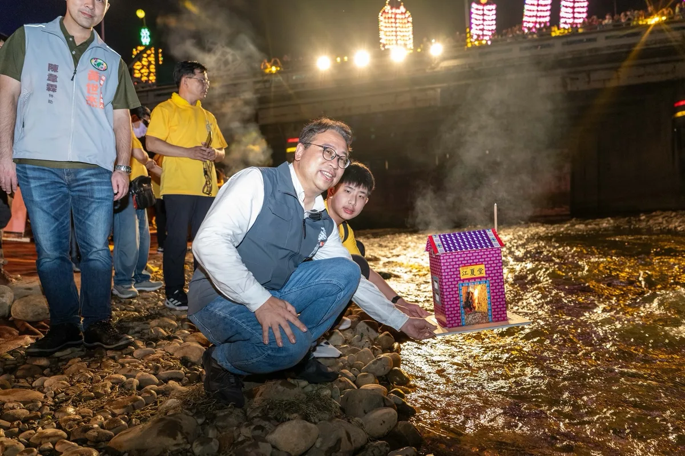
今晚的南崁溪畔水燈點點，映照著整座城市百年來的虔誠與慈悲。 世杰傍晚來到景福宮參拜祈福，沿路向市民朋友致意。遶境的尾聲，我也來到溪畔，跟大家一起把水燈放入溪流，祈願四方平安、風調雨順。 景福宮和福德宮的中元慶典，傳承超過一世紀，水燈排遶境與放水燈，早已超越慰藉孤魂、慈悲普渡的傳統意涵，而是代代相傳，凝聚桃園十五街庄跟各大姓氏宗親的情感記憶。 現在的桃園，是擁有235萬人的大城，人口規模即將超越首都台北。在城市大步向前、推動各項建設的同時，世杰會更用心守護在地文化底蘊，顧好我們的根，讓桃園成為一座進步、繁榮又有歷史溫度的宜居之城。
來到桃園大廟，參加慶讚中元水燈排車遶境！ 等等有市民朋友會去放水燈嗎？

明天早上9:00，新永和市場動起來✨ 新永和市場從舊永和市場一路延續桃園人的採買日常，如今有室內空調、乾濕分離、共食區和停車空間，生鮮蔬果、肉品、水產到熟食一次都能買齊，獲得經濟部「四星優良市集」肯定🌟 明早9:00一起到新永和市場杰伴同行！心桃園，動起來💖
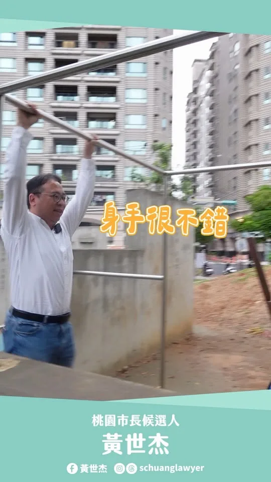
來到公園，親自挑戰看看🤣從孩子的角度出發，更能了解孩子需要什麼！ 身為爸爸，我時常陪著孩子到公園玩。我已簽下「兒童遊戲空間政策承諾書」，未來要讓桃園的公園更好玩，也更適合孩子活動、探索與成長。 ✅打造青少年戶外遊憩空間：正視12歲以上青少年的需求，規劃適合的活動空間！ ✅打造10分鐘遊戲圈：讓每個生活圈，都有孩子可以自在玩耍的遊戲空間！ ✅打造涼感公園：增加遮蔭、降溫與戲水設施，夏天也能舒服玩！ 努力把桃園打造成真正的遊戲宜居城市！心桃園，玩起來💖
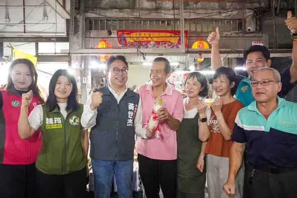
一早來到內壢市場！很多鄉親特地來等待，世杰跟團隊從市場一路走進街區，收到好多鼓勵跟打氣💪🏻我要特別感謝內壢福海宮劉守榮主委，昨晚不幸遇到車禍，今天依然堅持到場相挺，真的很感動，祝福主委早日康復。 大內壢居民超過十萬，人口持續成長。今天有不少市民跟攤商跟我反映，新華街路面多年沒有重新刨鋪，內壢國小通學廊道完成後，這一帶停車空間缺乏的問題，依然沒有一併改善。大家期待逛市場的感受更好，期待整體生活環境可以同步升級！ 這些看似日常的小事，其實都是居民每天生活最直接的感受。 未來鐵路地下化，沿線將會釋出更多公共空間。世杰上任後，會全面盤點居民需求，規劃地方期待已久的公有市場，改善公有空間雍塞跟不足的問題。同時也要積極協助鐵路地下化，讓工程如期如質完成。 感謝競總主委范振修資政、張曉昀議員、黃崇真 Huang Chung-Chen議員、彭俊豪議員、魏筠議員，以及內壢福海宮劉守榮主委、黃國棟委員、林琦彬委員同行。 感謝內壢市場的熱情，大家送上柿子、粽子、白蘿蔔，祝福世杰「事事如意、好事接粽來、好彩頭」，滿滿心意我都收到了！ 人口在成長，建設不能慢下來。我一定會全力以赴，讓內壢生活更便利、發展更順暢！心內壢，動起來💖
中壢最認真，就是黃崇真 Huang Chung-Chen！ 中壢正在面臨交通轉型期，除了鐵路地下化，還有中壢車站跟捷運銜接的重大工程，也同步進行中。崇真議員在議會持續監督，積極對市府提出各項建議，盼望能夠減少交通黑暗期對市民造成的困擾，加速建設的進度。 對市民來說，大型建設很重要，但每天生活遇到的小事，同樣關鍵。包括大家每天經過的路口安不安全、人行道好不好走。他把大家的需求放在心上，會勘、協調一件件解決，三年半以來服務超過6千件，真的非常拚。 崇真的溫暖，不只對有選票的大人。當他發現青少年自傷率愈來愈高，未成年孩子的心理健康出現危機時，也全力積極強化心輔資源，守護下一代。 這些年來，南桃園人口持續成長，醫療需求相當迫切，但在張善政任內大型醫院計畫停滯，遲遲沒有進展。未來世杰當市長，一定會盡快補上這個洞，我主張優先發展癌症、急重症、兒童等特色醫療。長期目標就是要為桃園爭取第二座醫學中心，讓醫療量能跟上城市發展的腳步。 感謝到場的市民朋友不畏風雨，把活動中心坐滿。謝謝我的競總主委范振修資政、南區競總黃仁杼總幹事、張火爐主委、黃傅淑香主委、舊明里羅善婷里長、興南里葉青旺里長、中建里李應偉里長、中央里楊萬焙里長、普義里黃崇修里長、永福里黃寶貞里長、中壢慈惠堂陳燦宏榮譽董事長，都現身給我們支持。 大事盯緊、小事做好，是崇真跟世杰共同的堅持。11/28，需要大家給我們更多支持，讓最打拚的議員跟市長聯手為地方做更多！讓心中壢 動起來💖